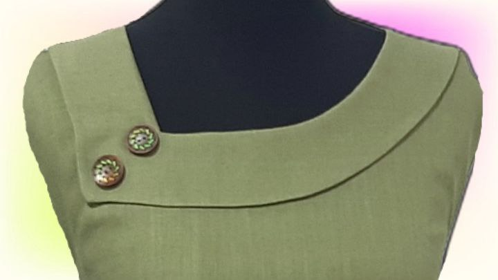

Description Hello my friend, Welcome to my sewing channel I'm Masi.
Here we are going to sew together and I will teach you everything I know and help you to be on the right path.
Every day you can see interesting and informative educational videos on my channel and enjoy it.
It's that simple to make sewing and you don't need to have a whole formula. will teach you how to sew t-shirts, pants, shirts, jackets, coats, sleeves, and collars.
I I will teach you lovely methods of sewing women's collars and sleeves and sewing tips and tricks for beginners.
Thank you very much for your kind comments and criticisms that help me make better videos.
If you have a special model or suggestion, tell me in the comments, I will try to make a video for you.
Don't forget to subscribe to the channel and activate the bell to be the first to see the tutorials. Don't forget to like nwenfguioeuoigueiohjgfuehguioehbuioehbuihebuihweuioghjeuojghueqjgouqerjgouqewrjguioeqrjgu<
